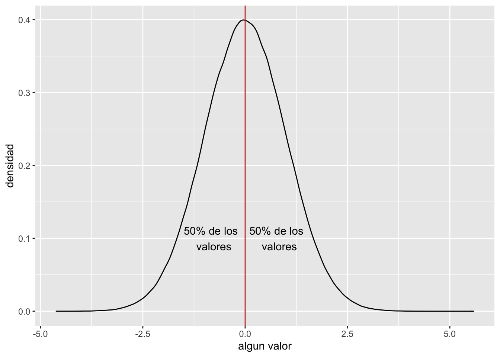

T8_Distribucion_Normal
Fecha de la ultima revisión
## [1] "2020-07-24"Install and load the following packages before class
This first part is to install a series of dependendies for the package “modeest” Chunk #1
#source("http://bioconductor.org/biocLite.R")
#biocLite("genefilter")Chunk #2
# This "pacman" package, has a function which determine if you have installed the package you need, if they are not installed they will install them. So RUN the first two lines.
if (!require("pacman")) install.packages("pacman")
pacman::p_load( car, GGally, ggversa, pastecs, psych, pander, ggplot2, nortest, Hmisc, boot, knitr)modeest,
Chunk #3
Activar los Packages
library(nortest) # package for testing normality
library(car) # package for correlation analysis
library(ggplot2) # package for vizualizing data
library(ggversa) # package of different "data sets"
#library(modeest) # package for calculating the mode
library(GGally) # ggplot based package to evaluate correlations among variables
library(pastecs) # package for analysis of space-time ecological series
library(psych) # package for procedures for psychometric, psychological and personality research
library(Hmisc) # A jumble of functions useful for graphics and tables, plus more
library(boot) # Package to estimate bootstrap intervals
library(knitr) # for the function kable (to make nice tables)Objectives of the day
- Determine if your data complies with normal distribution and learn how do basic correlations. # 1. Histogram
This normal distribution equation. Note that there is only two unknowns in this equation, the mean and the variance. The codes need to be written in LaTeX code. \[P(x)=\frac{1}{{\sigma\sqrt{ 2\pi}}}{e}^{-\frac{{(x-µ)}^{2}}{{2\sigma}^{2}}}\]
The Latex equation appears on a seperate line. Note the double “$ $” before and after the equation.
For inline equation, you only use one dollar sign before and after the equation.
For mean of the population \(\mu=\frac{\sum{{x}_{i}}}{{n}_{i}}\) , we use the letter “mu”, this refers to the mean of the universe. In other words of all the information without missing any.
Checking for NORMALITY VISUALLY
DATA to be used “DownloadFestival.csv”
Data collected the Hygiene condition of the festival goers at the 3 days at a Rock and Heavy metal festival in the UK.
0 = You smell like a “rotting corpse” 4 = You smell like “sweet rose”
library(readr)
DownloadFestival <- read_csv("Data_files_csv/DownloadFestival.csv")
dlf=DownloadFestival #use shorter data.frame names to make your life easier.....
head(dlf)## # A tibble: 6 x 5
## ticknumb gender day1 day2 day3
## <dbl> <chr> <dbl> <dbl> <dbl>
## 1 2111 Male 2.64 1.35 1.61
## 2 2229 Female 0.97 1.41 0.290
## 3 2338 Male 0.84 NA NA
## 4 2384 Female 3.03 NA NA
## 5 2401 Female 0.88 0.08 NA
## 6 2405 Male 0.85 NA NAtail(dlf)## # A tibble: 6 x 5
## ticknumb gender day1 day2 day3
## <dbl> <chr> <dbl> <dbl> <dbl>
## 1 4749 Female 0.52 NA NA
## 2 4756 Female 2.91 0.94 NA
## 3 4758 Female 2.61 1.44 NA
## 4 4759 Female 1.47 NA NA
## 5 4760 Male 1.28 NA NA
## 6 4765 Female 1.26 NA NAsummary(dlf)## ticknumb gender day1 day2
## Min. :2111 Length:810 Min. : 0.020 Min. :0.0000
## 1st Qu.:3096 Class :character 1st Qu.: 1.312 1st Qu.:0.4100
## Median :3620 Mode :character Median : 1.790 Median :0.7900
## Mean :3616 Mean : 1.793 Mean :0.9609
## 3rd Qu.:4155 3rd Qu.: 2.230 3rd Qu.:1.3500
## Max. :4765 Max. :20.020 Max. :3.4400
## NA's :546
## day3
## Min. :0.0200
## 1st Qu.:0.4400
## Median :0.7600
## Mean :0.9765
## 3rd Qu.:1.5250
## Max. :3.4100
## NA's :687dlf2=subset(dlf, dlf$day1<5)
ggplot(dlf2, aes(day1))+
geom_histogram(color="white")
\[P(x)=\frac{1}{{\sigma\sqrt{ 2\pi}}}{e}^{-\frac{{(x-µ)}^{2}}{{2\sigma}^{2}}}\]
# let us use a different data set, which has the corrected data.
library(readr)
DownloadFestival_No_Outlier_ <- read_csv("Data_files_csv/DownloadFestival(No Outlier).csv")
dlfc=DownloadFestival_No_Outlier_ # rename the data frame to something more simple
ggplot(dlfc, aes(day1)) +
geom_histogram(aes(), colour="white", fill="red")
# Note the Y axis are the "count" values
hist.dlfc1 <- ggplot(dlf2, aes(day1)) +
geom_histogram(aes(y=..density..), colour="white", fill="red") +
labs(x="Hygiene of Day 1", y = "Density")
hist.dlfc1
# Note the Y axis is now the density of the count values
# Now let add the normal distribution line, based on
hist.dlfc2 <- ggplot(dlf2, aes(day2)) +
geom_histogram(aes(y=..density..), colour="white", fill="red") +
labs(x="Hygiene of Day 2", y = "Density")+
stat_function(fun = dnorm,
args = list(mean = mean(dlf2$day2, na.rm = TRUE),
sd = sd(dlf2$day2, na.rm = TRUE)),
colour = "green", size = 1)
hist.dlfc2
# dnorm = density of the normal distribution
# mean = mean of the a data set
# sd = standard deviation of a data setNow change the variable and re-do the figure for Day 2 and 3
hist.dlfc2 <- ggplot(dlfc, aes(day2)) +
geom_histogram(aes(y=..density..), colour="white", fill="red") +
labs(x="Hygiene of Day 2", y = "Density")+
stat_function(fun = dnorm,
args = list(mean = mean(dlfc$day2, na.rm = TRUE),
sd = sd(dlfc$day2, na.rm = TRUE)),
colour = "green", size = 1)
hist.dlfc2
What would be a normal distribution of your own data
Here I created a function where you can use it to explore what to expect from a random sample a some survey/experiments you are doing.
We can use the function “rnorm” to create a data set that has a normal distribution, with a specific mean and standard deviation. rnorm(n, mean, sd) rnorm = (select n values, mean of x, sd of x), n= the number of values you want to select
calculate the mean and sd.
#rnorm(10, 100, 10)
x=rnorm(10000, 10, 2)
dfx=data.frame(x)
head(dfx)## x
## 1 5.645687
## 2 12.185079
## 3 11.960775
## 4 12.222828
## 5 12.814369
## 6 8.255735library(ggplot2)
hist.x <- ggplot(dfx, aes(x)) +
theme(legend.position = "none") +
geom_histogram(aes(y=..density..), bins=30,colour="black", fill="white") +
labs(x="Variable", y = "Density")+
stat_function(fun = dnorm, args = list(mean = mean(dfx$x,
na.rm = TRUE),
sd = sd(dfx$x, na.rm = TRUE)),
colour = "red", size = 1)
hist.x
- Normality curve
- qq-plot
Add a straight line on the qqplot
# This function is to add a straight line through the qqplot
qqplot_line.data <- function (vec) # argument: vector of numbers
{
# following four lines from base R's qqline()
y <- quantile(vec[!is.na(vec)], c(0.25, 0.75))
x <- qnorm(c(0.25, 0.75))
slope <- diff(y)/diff(x)
int <- y[1L] - slope * x[1L]
d <- data.frame(resids = vec)
ggplot(d, aes(sample = resids)) +
stat_qq() +
geom_abline(slope = slope, intercept = int, color="red")
}
# This here is the function ready to implement
qqplot_line.data(dlf2$day3)
Now check the qq plot for day 2 and day 3
Tests of Normality
A.
Shapiro-Wilks test
Problem, sensitive to sample size 1. should not be used with less than 50 data points 2. should not be used for sample size of over 200….
shapiro.test(dlf2$day1)##
## Shapiro-Wilk normality test
##
## data: dlf2$day1
## W = 0.99591, p-value = 0.03184length(dlf2$day1)## [1] 809B.
Other normality test, use the package “nortest”
Anderson-Darling test for normality,
The Anderson-Darling test is an EDF omnibus test for the composite hypothesis of normality. Omnibus tests are a kind of statistical test. They test whether the explained variance in a set of data is significantly greater than the unexplained variance, overall.
library(nortest)
ad.test(dlf2$day1)##
## Anderson-Darling normality test
##
## data: dlf2$day1
## A = 0.53546, p-value = 0.17Capitulo 15 5. Summary statistics, individual appraoch, summary 1. Mean 2. Median
3. Mode 4. Skewness and Kurtosis
x=sample(1:100, size=100, replace = TRUE)
x=data.frame(x)
head(x)## x
## 1 33
## 2 5
## 3 39
## 4 33
## 5 20
## 6 8mean(x$x)## [1] 49.91var(x$x)## [1] 837.6989sd(x$x)## [1] 28.94303min(x$x)## [1] 1max(x$x)## [1] 100Mean = mean Variance =var Standard deviation = sd mimimum value of a variable = min maximum value of a variable = max median value of a variable = median
mean(dlf2$day2, na.rm=TRUE)## [1] 0.9552852var(dlf2$day1, na.rm=TRUE)## [1] 0.4815148sd(dlf2$day1, na.rm=TRUE)## [1] 0.6939127min(dlf2$day1, na.rm=TRUE)## [1] 0.02max(dlf2$day1, na.rm=TRUE)## [1] 3.69median(dlf2$day1, na.rm=TRUE)## [1] 1.79Start Here
Summary stats
summary(dlf2$day1, na.rm=TRUE) ## Min. 1st Qu. Median Mean 3rd Qu. Max.
## 0.020 1.310 1.790 1.771 2.230 3.690# the "describe" function is the "psych" package
library(psych)
describe(dlf2[,c("day1","day2","day3")]) ## dlf2[, c("day1", "day2", "day3")]
##
## 3 Variables 809 Observations
## --------------------------------------------------------------------------------
## day1
## n missing distinct Info Mean Gmd .05 .10
## 809 0 199 1 1.771 0.7901 0.594 0.848
## .25 .50 .75 .90 .95
## 1.310 1.790 2.230 2.670 2.906
##
## lowest : 0.02 0.05 0.11 0.23 0.26, highest: 3.38 3.41 3.44 3.58 3.69
## --------------------------------------------------------------------------------
## day2
## n missing distinct Info Mean Gmd .05 .10
## 263 546 102 1 0.9553 0.7761 0.140 0.200
## .25 .50 .75 .90 .95
## 0.410 0.790 1.335 1.970 2.438
##
## lowest : 0.00 0.02 0.05 0.06 0.08, highest: 2.91 3.00 3.21 3.35 3.44
## --------------------------------------------------------------------------------
## day3
## n missing distinct Info Mean Gmd .05 .10
## 123 686 65 0.999 0.9765 0.7754 0.170 0.266
## .25 .50 .75 .90 .95
## 0.440 0.760 1.525 1.904 2.146
##
## lowest : 0.02 0.08 0.11 0.14 0.17, highest: 2.29 2.55 2.70 3.02 3.41
## --------------------------------------------------------------------------------# the "stat.desc" function is the "pastec" package
stat.desc(dlf2[,c("day1","day2","day3")], basic=FALSE,norm=TRUE)## day1 day2 day3
## median 1.790000000 7.900000e-01 7.600000e-01
## mean 1.770828183 9.552852e-01 9.765041e-01
## SE.mean 0.024396670 4.417064e-02 6.404352e-02
## CI.mean.0.95 0.047888328 8.697463e-02 1.267805e-01
## var 0.481514784 5.131250e-01 5.044934e-01
## std.dev 0.693912663 7.163274e-01 7.102770e-01
## coef.var 0.391857702 7.498572e-01 7.273672e-01
## skewness -0.003155393 1.097314e+00 1.007813e+00
## skew.2SE -0.018353763 3.653087e+00 2.309035e+00
## kurtosis -0.423991408 8.293234e-01 5.945454e-01
## kurt.2SE -1.234611514 1.385557e+00 6.862946e-01
## normtest.W 0.995907065 9.080040e-01 9.077516e-01
## normtest.p 0.031838626 1.290743e-11 3.804486e-07round(stat.desc(dlf2[,c("day1","day2","day3")], basic=FALSE,norm=TRUE), digits=3) # reduce to 3 significant figures## day1 day2 day3
## median 1.790 0.790 0.760
## mean 1.771 0.955 0.977
## SE.mean 0.024 0.044 0.064
## CI.mean.0.95 0.048 0.087 0.127
## var 0.482 0.513 0.504
## std.dev 0.694 0.716 0.710
## coef.var 0.392 0.750 0.727
## skewness -0.003 1.097 1.008
## skew.2SE -0.018 3.653 2.309
## kurtosis -0.424 0.829 0.595
## kurt.2SE -1.235 1.386 0.686
## normtest.W 0.996 0.908 0.908
## normtest.p 0.032 0.000 0.000Quantiles
quantile(dlf2$day1,probs=c(0.05, 0.1, 0.25, 0.5,.55, 0.75, 0.95, 0.99), na.rm=TRUE)## 5% 10% 25% 50% 55% 75% 95% 99%
## 0.5940 0.8480 1.3100 1.7900 1.8800 2.2300 2.9060 3.3176